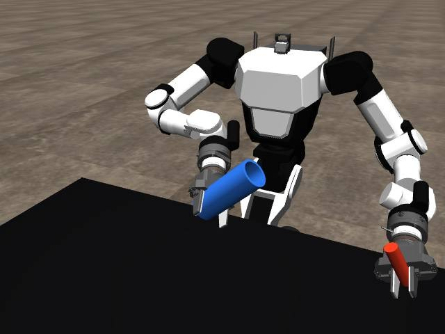
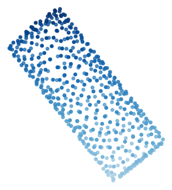
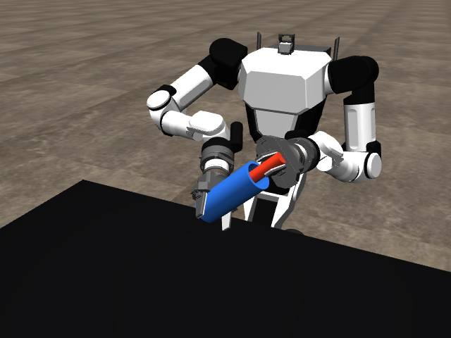
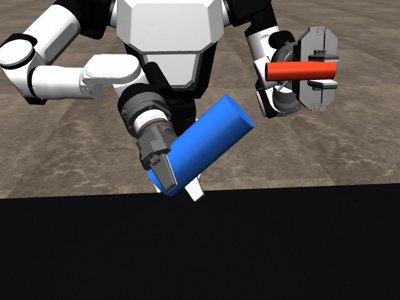
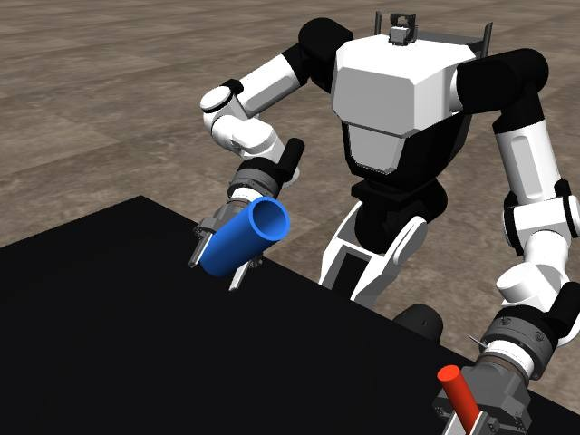
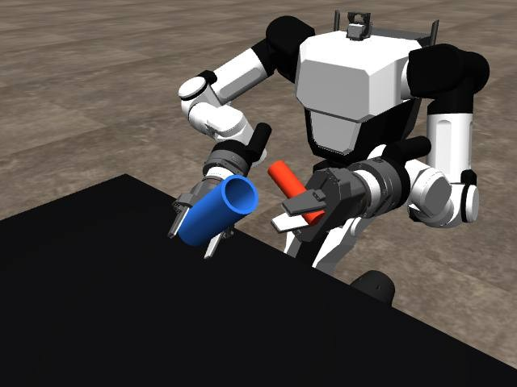
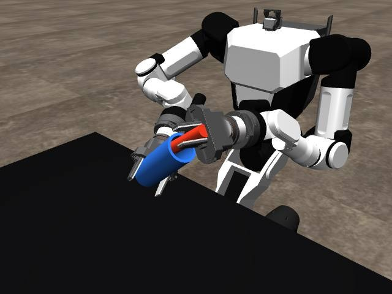

🤖 Robot learning for the RB-Y1 Humanoid Robot
Welcome to DD2603 PROJ1! 👋 This is your opportunity to put all that math into practice 📐 and make a robot smarter 🧠. Your mission: teach a humanoid robot 🤖 how to manipulate objects around it from demonstrations.
Overview
The robot is in front of a table with 3 RGB-D cameras around it. The goal is to design your own policy that looks at the scene through the cameras and decides how the robot's arms should move to accomplish a given task.
Your policy can see the scene in one of two ways. Pick one:
A. From the point cloud


container.embedding 
B. From the raw image

camera_centre.image camera_centre.embedding We give you the code for everything above: the simulator, the cameras, the point-cloud and image encoders, and the scripts that train, run and score a policy. The codebase also has a folder,
student/, which is yours. There you will write your code for implementing and training your policy. When you submit your code, you should not hand in the whole codebase, only a zip of your student/ folder. Then we will test it with the course code exactly as we gave it to you, so do not change anything outside student/ as those changes would not be in your submission, and your policy must work without them. If you think the course code needs a change, ask the TAs.1Start the simulator
First follow the setup in README.md, so that you have the environment and the demonstrations. Then start the robot simulation in its own terminal, with the environment activated (conda activate ./miniconda_env), and leave it running.
rby1-simIt takes its scene and the robot's start pose from simulator: in configs/defaults.yaml.
ready pose. Close the window or press Ctrl+C to stop it.2Running your first policy!
Before making your own policy, watch a pretrained policy control the robot. You might also notice that there is plenty of room for improvement!. With the simulator still running, in a new terminal (as always, activate your conda environment):
python scripts/run_policy.py # runs run: checkpoint: in student/project.yaml, the pretrained policy


The policy you just used is a small neural network trained on demonstrations of this task using conventional behavior cloning. The whole pipeline takes the cameras' images of the blue container in the robot's right arm, then constructs its point cloud, encodes it, and finally feeds it to the policy to determine how the left hand should move.
3Look at the demonstrations
You have 40 demonstrations of the task (datasets/insertion_vision, which you downloaded during the setup in the README), each with the container somewhere else: demos 0 to 29 for training and 30 to 39 for validation. The validation demos are made from other real demonstrations than the training ones, so they test your policy on motions it has not seen.
Visualizing the demos: To visualize the demos you can run this in a new terminal which will open up a page in your browser (this might take a couple of seconds). If the visualizer does not suit your needs you can of course visualize the datasets as you please.
python visualization/report.py datasets/insertion_vision --open # → reports/insertion_vision.htmlEach demonstration is a folder with one file per signal (hand poses, joints, gripper, the container's point cloud) and a video per camera. dataset_config.json says what is in it.
4Train a policy
Train a neural network on the demonstrations. student/project.yaml says which policy, what goes in, what comes out and how long to train. The data preprocessing is the generally the same, except that you have the option of working with the pointcloud of the blue container or a raw image of the scene. Generally the settings for the preprocessing are in configs/defaults.yaml.
python scripts/train.pySaved the run in policies/my_first_policy, with losses.png and rollout plots in that folder.By default this trains student/example_policy.py, a small MLP. To try your own network, fill in the TODOs of student/my_policy.py and set policy: type: student/my_policy.py:MyPolicy in student/project.yaml. Give each try its own policy_name, so the runs don't overwrite each other.
5Run a trained policy
You can run a policy the same way as the pretrained one in step 2. To choose your own policy, in student/project.yaml, set run: checkpoint: policies/{policy_name}/checkpoints/best.pt. Give a demo's number to start from that demonstration (one it did not train on) with the container where it was in that demo.
python scripts/run_policy.py --demo 15 # or add demo: 15 under run: in student/project.yamlTo score it, run it from every validation demo (demos 30 to 39, from the dataset's split.json) and count how often the rod ends in the container. The settings are under evaluate:.
python scripts/evaluate_insertion_sim.pyRod in the container in …% of … runs.6Look at results
Every run is recorded like a demonstration. Make a page of the demos and your runs, and open it in a browser.
python visualization/report.py # your runs (logs/PolicyController) → reports/PolicyController.htmlTo see the demos and your runs together, add report: {folders: [{dataset}, logs/PolicyController]} to student/project.yaml.
7Your next steps
By now you have run the pretrained policy, trained the example policy, run it, scored it and looked at its rollouts. Now it is time to build your own! At the end the two main files you will need to change are:
student/my_policy.py: your policy, its three methods to fill in (the next section says what they get and return;student/example_policy.pyis a complete one).student/project.yaml: its settings, in four sections, one per script: (1) the policy (its class, its settings, what it sees and does), (2) training, (3) which policy to run, (4) which policy to score.
Of course you are free to write more code within student/ as needed by your implementation.
Remember: only student/ is handed in, so any changes you make to the code outsie student/ will be used once you submit your code (the notice at the top of this page).
Then the process is just as explained above: python scripts/train.py, python scripts/run_policy.py, python scripts/evaluate_insertion_sim.py, and check the report to see what happened.
Your policy's interface
Your policy is a class in student/my_policy.py (policy: type: student/my_policy.py:MyPolicy in student/project.yaml). Training, evaluation and the robot treat every policy the same way, through three methods. What your network is, its loss, and how it makes an action (one pass, an integration, a denoising loop, …) are all yours.
class MyPolicy(torch.nn.Module):
def __init__(self, input_dim, output_dim, features=None, **settings): # settings: the rest of policy: in student/project.yaml
def loss(self, x, y): # a training batch: x (B, input_dim), y (B, output_dim) -> a scalar tensor
def predict(self, x): # on the robot: one input x (numpy) -> one output (numpy)The vectors. x holds your input_features side by side, in their order, after the preprocessing. y holds chunk_size actions one after the other, each made of your output_features side by side. If your __init__ takes features, it gets their sizes, and feature_slices says where each one is, e.g.,
features = {"inputs": {"left.ee.pose": [7], "container.embedding": [6]}, # [1027] with embedding_dim: null
"outputs": {"left.commands.arm.ee.velocity": [6]},
"chunk_size": 1}
from rbylearn.learning.policies import feature_slices
s = feature_slices(features)
q = x[..., s["left.ee.pose"]][..., 3:7] # the hand's unit quaternionInputs you can choose in policy: input_features:. Each feature's shape is what your policy gets in features; in the input vector x they are flattened and side by side. The two embeddings' shapes depend on policy: embedding_dim: in student/project.yaml: with the default 3 each is reduced to its encoder's first 3 principal components (PCA), and with null it is the encoder's whole output. So read the sizes from features (or input_dim) rather than writing them into your code.
| Feature | Shape | Description |
|---|---|---|
left.ee.pose | (7,) | The hand's position (x, y, z), then its orientation as a unit quaternion (qw, qx, qy, qz) with qw ≥ 0. The position is seen from the container's centre if the policy takes container.embedding (the robot's base frame otherwise, e.g. with camera_centre.embedding), and scaled to [-1, 1]; the quaternion is left as it is, a point on the sphere S³. Rotations: the robot's base frame |
container.embedding | (6,) or (1027,) | What the cameras see of the container: its point cloud's centre (x, y, z), then its shape and orientation (PointNet++, pretrained and frozen), standardized. By default that is the first 3 principal components of PointNet++'s 1024 numbers; with embedding_dim: null in student/project.yaml it is all 1024 |
container.pointcloud | (1536,) | The container's point cloud itself: 512 points (x0, y0, z0, x1, …) in metres, base frame, from the three cameras |
camera_centre.embedding | (3,) or (512,) | What the centre camera sees (ResNet18, pretrained on ImageNet and frozen), standardized. By default that is the first 3 principal components of ResNet18's 512 numbers; with embedding_dim: null in student/project.yaml it is all 512. |
camera_centre.image | (3, 96, 128) | The centre camera's raw colour image: 3 channels (RGB) of 96 × 128 pixels, values 0 to 255, not scaled. The camera runs at 10 Hz, so the policy gets its latest image |
left.gripper.closing | (1,) | How closed the left gripper is: 0 is fully open, 1 is fully closed (holding the rod, it is about 0.7) |
left.arm.joints.position | (7,) | The left arm's 7 joint angles (rad) |
Outputs in policy: output_features: (the robot moves the left hand to follow them, within the safety limits):
| Feature | Shape | Description |
|---|---|---|
left.commands.arm.ee.velocity | (6,) | The hand's velocity: linear (vx, vy, vz) and angular (ωx, ωy, ωz), base frame, each scaled by its largest value in the demos. The angular velocity is a tangent vector of the rotations: the hand turns by exp(ω dt) each step |
left.commands.arm.ee.pose | (7,) | The hand's next pose, position and unit quaternion, base frame, as it is (not scaled) |
left.commands.gripper | (1,) | How closed the left gripper should be: 0 fully open, 1 fully closed. The demos open it at the end to drop the rod into the container |
Timing. dt is the time between two actions (0.05 s). With chunk_size: n your policy predicts n actions at once; the robot runs the first execute_steps of them, then asks again. Everything else about the data (the time step, the point-cloud encoder, the scaling, the noisy copies for training) is in configs/defaults.yaml's preprocessing:. It is the same for everyone, so policies stay comparable.
Where things are
student/yours | Your settings and your code. Course updates never change anything in it |
student/project.yamlyour settings | Every step's settings, in one file |
student/my_policy.pyyour policy | Your own policy: the three methods to fill in |
student/example_policy.py | A complete example policy (a small MLP), the one trained until you switch to yours |
scripts/ | The commands: train.py trains, run_policy.py runs a policy on the robot, evaluate_insertion_sim.py scores it in the simulator |
policies/ | Your trained policies (policies/{policy_name}/), next to the course's policies/pretrained/ |
configs/defaults.yaml | The course's defaults: any setting you leave out of student/project.yaml comes from here, and so does the preprocessing. Don't edit it |
visualization/ | Plots and the HTML report |
src/rbylearn/learning/ | Policies, training, evaluation |
src/rbylearn/preprocessing/ | Steps that prepare the data (resample, normalize, encode point clouds, …) |
src/rbylearn/vision/ | Point clouds from the cameras and their encoders |
src/rbylearn/sim/ | The simulator: robot, cameras, gripper |
configs/ | Which robot to talk to, safety limits, named poses |